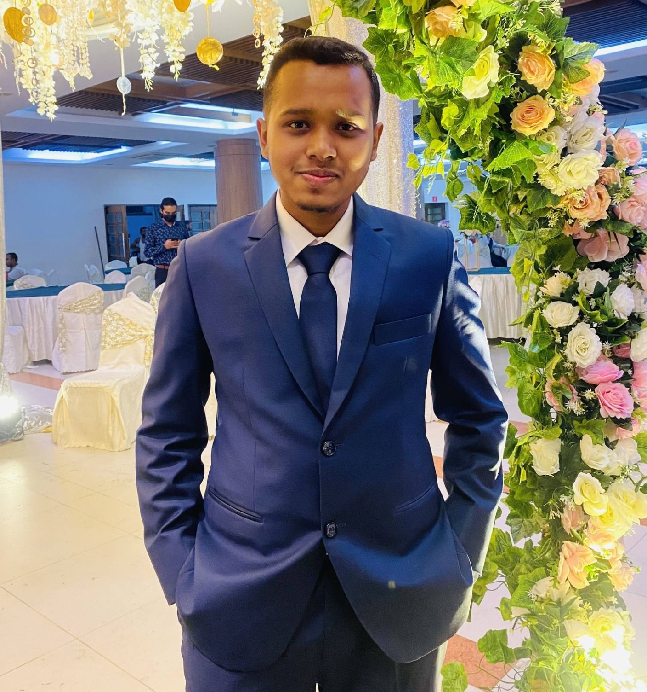
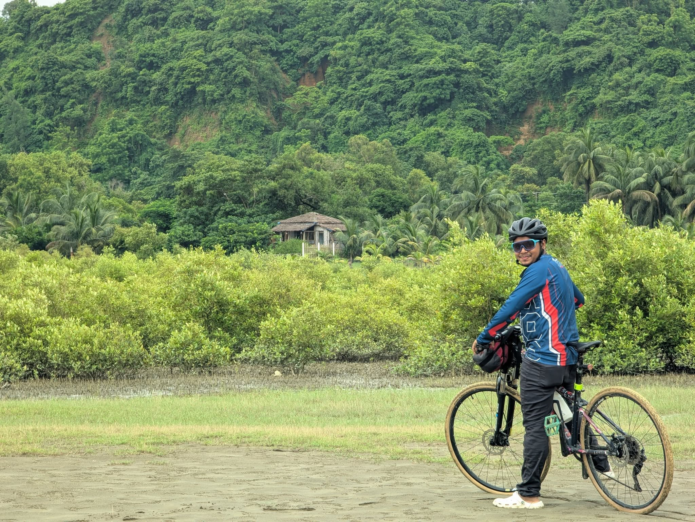

Screenshot placeholder
Academic Project
Java Cafe Management System
A Java-based cafe management application with a graphical user interface, database integration, and management features.
Dhaka, Bangladesh
Curious Mind. Builder's Spirit. Explorer's Heart.
BSc in CSE student exploring technology, business, and the world beyond the screen.
I'm Nafis Ahmed Sani — a CSE student, aspiring builder, and outdoor enthusiast. I enjoy solving problems, learning through practical projects, working with people, and turning ideas into meaningful experiences.

I'm a BSc student in Computer Science and Engineering, still early in the journey and enjoying the process. What pulls me in most is software development that solves real, practical problems — not just code that passes an exam.
So far I've learned Java and object-oriented programming, built interfaces with HTML, CSS and JavaScript, worked with Git and GitHub, and managed data with MySQL. Each of those became clearer the moment I used it in a project.
Outside the classroom, I'm interested in entrepreneurship, business operations, digital marketing and personal branding. I believe learning becomes valuable when ideas are applied in the real world.
BSc in Computer Science and Engineering — Currently Studying
To combine technology, business thinking, and real-world experience to build useful products, independent ventures, and a life full of meaningful experiences.
Academic Project
A Java-based cafe management application with a graphical user interface, database integration, and management features.
In Development
My personal website showcasing my learning journey, projects, interests, and experience.
Planned
A planned practical calculator for business metrics such as ROI, ROAS, and basic financial calculations.
Exploring
A space for future web development, automation, and business-focused software experiments.
Hands-on experience supporting day-to-day business operations, social media page management, customer communication, promotional campaigns, product posts, and customer engagement in a cycling retail business.
Cycle 365 is a Cycling business. My experience comes from helping manage operations and social media; I do not own the business.
365 WEAR is my independent active-lifestyle apparel venture, built around the idea of movement, exploration, and everyday living.
MOVE. EXPLORE. LIVE.

Explored more than 30 districts across Bangladesh by bicycle.
Participated in more than 10 half-marathons.
Experience coordinating people, communicating ideas, and helping teams move toward shared goals.
Red Crescent involvement and community activities.
A strong interest in travel, outdoor experiences, endurance, and discovering new places.
I believe the best lessons often happen outside our comfort zones. Every ride, every run, every new place, and every challenge teaches me something that no screen alone can.
Dhaka, Bangladesh
I'm always open to meaningful conversations, interesting collaborations, learning opportunities, and ideas worth exploring.